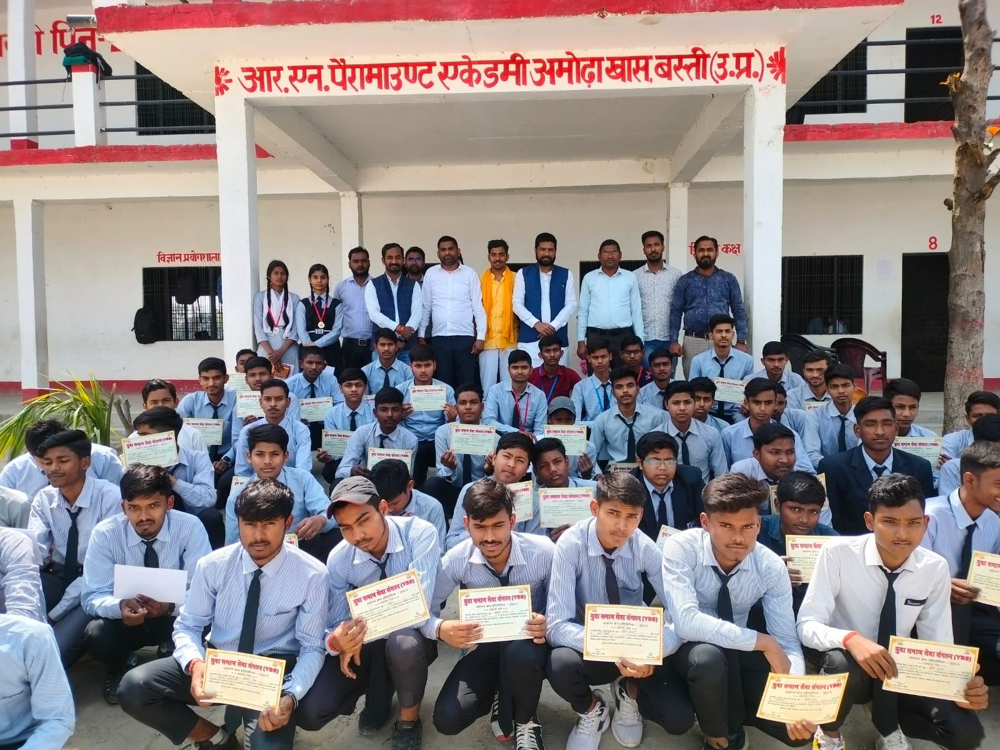
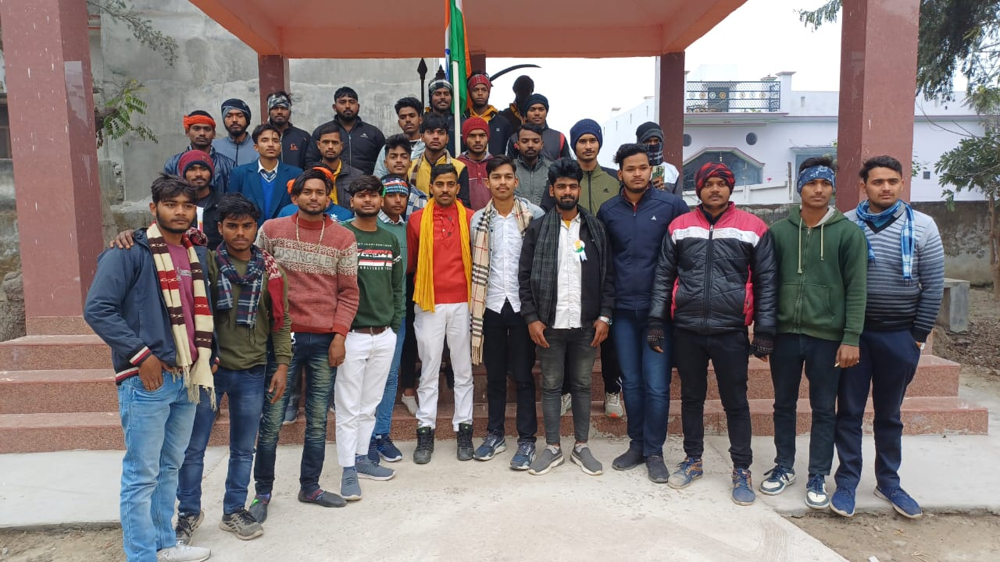
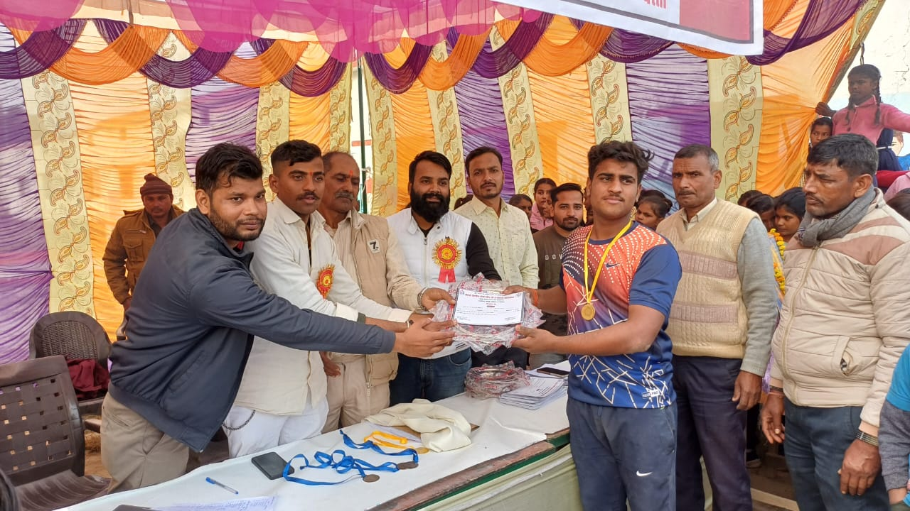
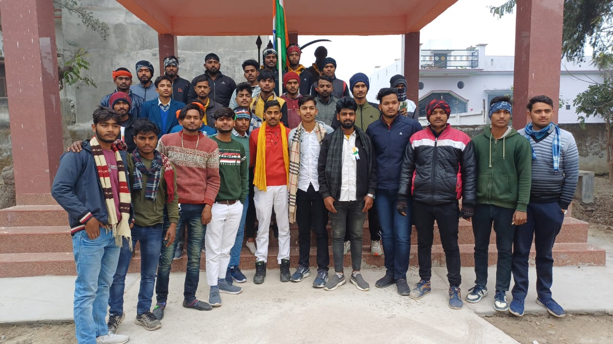
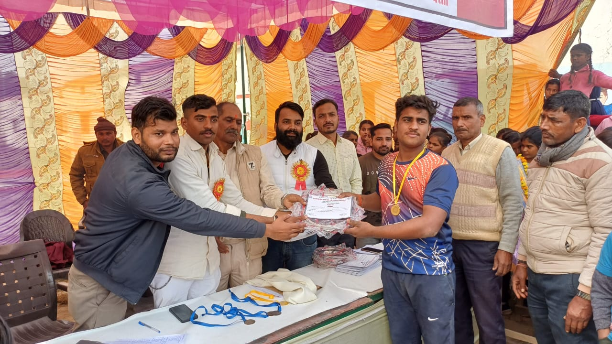
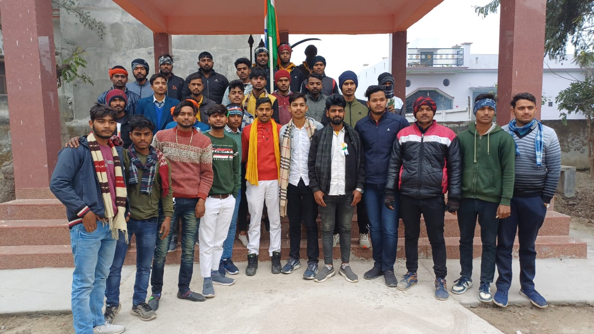
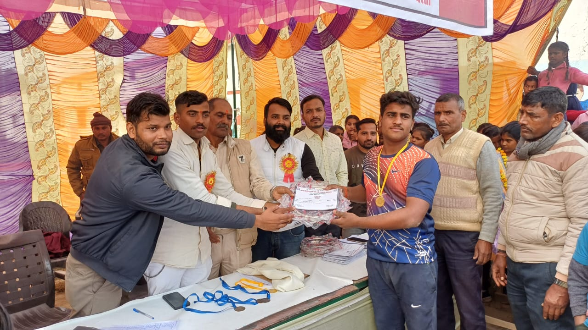
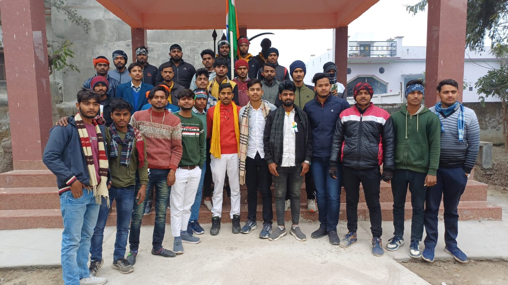
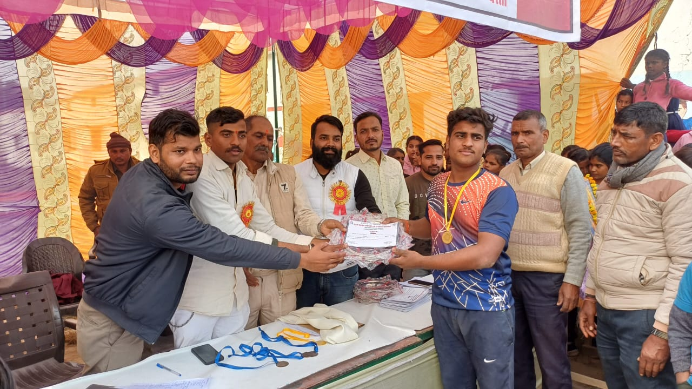

 







Yuva SamajSeva Sangathan – Dedicated Team
Uttar Pradesh
Social worker with 5+ years of experience in youth empowerment, education and rural development.

lucknow, UP
Actively working for student welfare, career guidance and community services.

Lucknow, UP
Advocate, Supreme Court of India | Managing Partner @ Verion Legal | Founding Trustee @ IPRS (India) & Samvit Foundation (India)
Yuva SamajSeva Sangathan is a non-profit social organization committed to the holistic development of society through youth empowerment, education, awareness, and community service. Our mission is to create responsible, skilled, and socially conscious citizens who actively contribute to nation building and social harmony.
We believe that youth are the backbone of a progressive nation. Through continuous efforts in education support, career guidance, social awareness programs, health initiatives, and rural development activities, our organization strives to bridge the gap between opportunities and deserving individuals. Our programs focus on empowering students, guiding unemployed youth, and supporting underprivileged communities.
Yuva SamajSeva Sangathan works actively across Uttar Pradesh and other regions of India with the help of dedicated volunteers, professionals, and social workers. We collaborate with educators, legal experts, healthcare professionals, and community leaders to ensure sustainable development and long-term impact.
Our vision is to build an inclusive society where every individual has access to education, justice, healthcare, and equal opportunities. With strong moral values, transparency, and collective effort, we aim to inspire positive change and create a better future for generations to come.